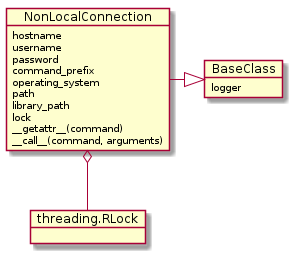
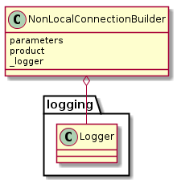
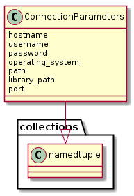

The Non-Local Connection is a Base for non-local connectionS (e.g. SSH or Telnet).
Calls to a NonLocalConnection takes the command-line command as a property and the arguments to the command as parameters. For example, if the command is ps and the argument is -e then a connection would be called like this:
output, error = connection.ps('-e')
for line in output:
print line
The output and error are actually unpacking the OutputError namedtuple defined in the localconnection module. An alternative way to make the same call would be:
output_error = connection.ps('-e')
for line in output_error.output:
print line
Although the dot-notation is the primary interface, there are cases where the command contains a dot (e.g. wifi.sh) which renders it unusable. For those cases you can use the __call__ method instead:
output, error = connection(command='wifi.sh', arguments='status', timeout=1)
The __call__ is actually an alias for the _procedure_call method, but is provided to to keep the interface more consistent with other classes in the package, and hopefully reduce the likelihood of error caused by having to remember the name of the method (I never can).
NonLocalConnection(hostname, username[, ...]) |
A non-local connection is the base for non-local connections |
The primary features the NonLocalConnection adds to children that inherit from it are the setting of a command prefix (based on the PATH and LD_LIBRARY_PATH variables) and the dot-notation interface. Additionally, since it inherits from the BaseClass all children have a logger attribute.

Note
The port is not set in the NonLocalConnection so that child-classes can set a default port number for themselves.
Warning
Because the _getattr__ is defined, children of this class need to be aware that if a user of the child-class tries to get a property that was not defined in the class they will not get an AttributeError but will instead get the __getattr__ method returned. e.g. if you did not define SSHConnection.nickname but a user tried to retrieve it – nick = connection.nickname – the nick variable would now contain a reference to connection.__getattr__ which might not be what was expected.
NonLocalConnectionBuilder() |
A base-plugin class for non-local connections |

This is a named-tuple to pass parameters to the non-local-connection.
ConnectionParameters(hostname, username, ...) |

TestNonLocalConnection.test_main(*arg, **kw) |
Does it raise an error if the main method isn’t implemented? |
TestNonLocalConnection.test_add_path() |
If the path and/or library paths are set, does it add them to the command? |
TestNonLocalConnection.test_getattr() |
Does it add the path to the command then call _procedure_call()? |
TestNonLocalConnection.test_command_prefix() |
If the command_prefix is set, does it add it to the command? |
TestNonLocalConnectionBuilder.test_product(...) |
Does the product raise an error if not re-implemented? |
TestNonLocalConnectionBuilder.test_attributes() |
Does the builder have the attributes promised by the API? |